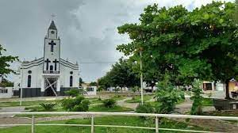
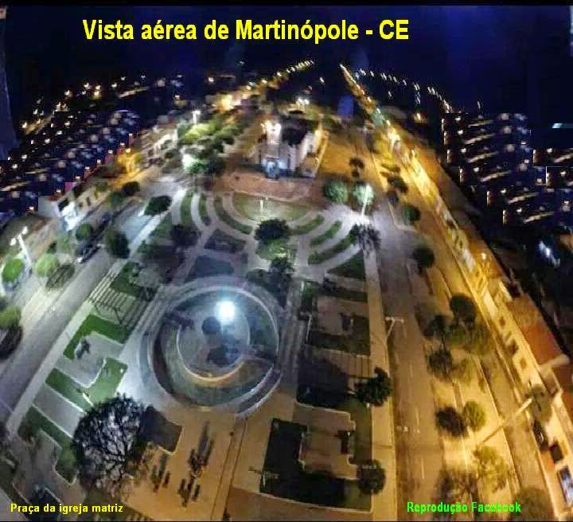

Informações técnicas sobre relevo, população, IDH etc.
| INFORMAÇÕES | |
|---|---|
| Municípios limítrofes | Norte: Granja; Sul: Uruoca; Leste: Senador Sá; Oeste: Granja. |
| Fundação | 26 de março de 1957 (64 anos) |
| Clima | Não disponível |
| IDH | 0,583 — baixo |
| PIB | R$ 2 450,58 |
| INFORMAÇÕES TERRITÓRIAIS | |
|---|---|
| Número de habitantes | 11 233 habitantes |
| Superfície de Martinópole |
29 896 hectares
298,96 km² (115,43 sq mi) |
| Densidade populacional | 37,6 ha./km² |
| Altitude de Martinópole | 48 metros de altitude |
| Coordenadas geográficas decimais |
Latitude:
-3.22194
Longitude: -40.6914 |
| Coordenadas geográficas sexagesimais | Latitude: 3° 13' 19'' Sul , Longitude: 40° 41' 29'' Oeste |
| INFORMAÇÕES DO MUNICÍPIO | |
|---|---|
| Endereço da Prefeitura Municipal de Martinópole |
Martinópole
Prefeitura de Martinópole
Av. Capitão Brito, s/n - Centro MARTINÓPOLE - CE, 62450-000 Brasil Work +55 88 3627-1300 Fax +55 88 3627-1049 |
| Site oficial do município | martinopole.ce.gov.br |
| INFORMAÇÕES DO ADMINISTRATIVAS | ||
|---|---|---|
| Prefeito de Martinópole | JAMES MARTINS PEREIRA BARROS | |
| Partido politico | PP | |
| INFORMAÇÕES DE TRANSPORTE | |
|---|---|
| Aeroporto |
Aeroporto Pinto Martins
38.6 km
Aeroporto de Sobral
64.5 km
Aeroporto Internacional Prefeito Dr.João Silva Filho
121.3 km
|
| INFORMAÇÕES DE DISTÂNCIA A OUTRAS CIDADES | ||
|---|---|---|
| São Paulo : 2352 km | Rio de Janeiro : 2208 km | Brasília : 1607 km |
| Salvador : 1111 km | Fortaleza : 245 km mais perto | Belo Horizonte : 1881 km |
| Manaus : 2149 km | Curitiba : 2637 km | Recife : 839 km |
| Goiânia : 1767 km | Belém : 891 km | Porto Alegre : 3184 km |
| Guarulhos : 2331 km | Campinas : 2296 km | São Luís : 409 km |
| Distância calculada em linha reta! | ||
Conheça mais sobre a história da MARTINÓPOLE.
História
O município de Martinópole surgiu por volta da metade do século XIX, originando-se uma fazenda com poucos
habitantes que se instalaram nas proximidades de uma lagoa chamada Angica.
O ano de 1877 foi assolado por uma seca degradante – muitos migrantes procedentes de Santa Quitéria, Sanatana
do Acaraú, Crateus, Riachão (atualmente Uruoca), chegavam a Angica atraídos pela água da lagoa e ali fixaram
residência. Os primeiros a chegar pertenciam as famílias Paulino Samapaio, Porfírio Gomes e, em seguida
chegaram as famílias Brito, Feijó, Melo e outras.
A palavra Angica originou-se de uma árvore conhecida popularmente com “ANGICO”, pertencente a família das
leguminosas monosáceas existente nas margens de uma lagoa que servia de sombra para o gado malhar e também
proteger-se da soalheira durante parte do dia.
Em outubro de 1917, a população oficializou a mudança do nome Angica para “Martinópolis” originou-se da junção
MARTINS em homenagem ao Pe. Vicente Martinsda Costa, pároco de Granja que muitos serviços prestou ao nosso
povoado; e PÓLIS que em grego quer dizer “Cidade”. Martinópolis significa CIDADE DE MARTINS.
Pouco tempo depois constatou-se a existência de uma cidade com o mesmo nome Nno Estado de São Paulo, até as
iniciais da Ferrovia eram idênticas - EFS - por extenso Estrada de Ferro Sobral. Muitas foram as trocas de
correspondências e documentos entre ascidades, o que resultou na alteração do nome de nossa cidade para
“MARTINÓPOLE”.
Gentílico: martinolopolitano ou martinolopense
Formação Administrativa:
Distrito criado com a denominação de Angica, por ato provincial de 06-06-1881, subordinado ao município de
Granja.
Em divisão administrativa referente ao ano de 1911, o distrito aparece grafado Angico permanece no município
de Granja.
Pelo decreto estadual nº 1156, de 04-12-1933, o distrito de Angico passou a denominar-se Martinópolis.
Em divisão administrativa referente ao ano de 1933, o distrito já denominado Martinópolis permanece no
município de Granja.
Assim permanecendo em divisões territoriais datadas de 31-XII-1936 e 31-XII-1937.
Pelo decreto-lei estadual nº 1114, de 30-11-1943, o distrito de Martinópole passou a ser grafado Marinópolis.
Em divisão territorial datada de 1-VII-1950, o distrito já grafado Martinópole permanece no município de
Granja.
Assim permanecendo em divisão territorial datada de 1-VII-1955.
Elevado à categoria de município com a denominação de Martinópole, pela lei estadual nº 3560, de 29-03-1957,
desmembrado de Granja. Sede no antigo distrito de Martinópole. Constituído do distrito sede. Instalado em
28-04-1957.
Em divisão territorial datada de 1-VII-1960, o município é constituído do distrito sede. Assim permanecendo em
divisão territorial datada 2005.
Fonte:
IBGE
Saiba mais sobre os melhores lugares e o que fazer em MARTINÓPOLE.
Igreja Matriz

Praça Principal

Fontes:
https://www.facebook.com/MartinopoleNoticias/
https://www.blogacontece.com/p/martinopole-ce.html
Veja como chegar nos melhores pontos de MARTINÓPOLE